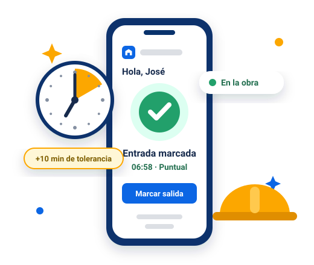

Asistencia
Marca tu entrada en un toque
Cada persona marca su entrada y su salida desde el celular o el computador. ConstruTrack lo compara con su horario y da 10 minutos de tolerancia: pasado ese margen, la llegada cuenta como retardo.
- Horario y días laborables de cada persona
- Historial con las horas trabajadas
- También desde Arqui: escribe «marcar entrada»
